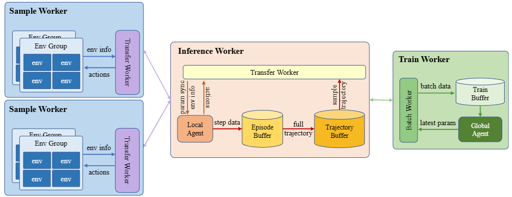

SADMA: Scalable Asynchronous Distributed Multi-Agent Reinforcement Learning Training Framework
Sizhe Wang*, Long Qian*, Cairun Yi,
Fan Wu, Qian Kou,
Mingyang Li, Xingyu Chen,Xuguang Lan†
*Equal contribution †Corresponding author

摘要
多智能体强化学习(MARL)在解决大规模复杂决策问题方面取得了显著的成功，但是同时也面临着计算成本和训练时间大幅增加的挑战。 MARL算法通常需要充分的环境探索才能获得良好的性能，特别是对于复杂环境，传统训练方法中的低交互频率和同步训练会严重限制整体速度。 并且大多数现有的利用分布式训练来加速强化学习的训练框架，专注于简单的单智能体设置，不能扩展到大规模的多智能体强化学习场景。 为了解决这个问题，我们引入了一个可扩展的异步分布式多智能体强化学习训练框架SADMA，它将训练过程模块化，并以异步和分布式的方式执行模块，以实现高效的训练。 该框架具有强大的可扩展性，为大规模复杂环境下多智能体强化学习的分布式训练提供了有效的解决方案。
灵活的资源分配
得益于模块化设计和统一的数据传输接口，使每个模块可以灵活地相互组合，并分配给不同的集群中的计算节点而不受硬件设备的限制。
这有助于在具有不同资源配置的集群上进行部署。
我们的框架自然地适应不同的资源配置，因此可以充分利用集群资源，加快培训。

实验
吞吐量比较
我们比较了不同资源（单台和多台机器配置）下的基线。

收敛加速
我们比较了每个框架的收敛时间，使不同算法在相同的资源配置不同框架下收敛。

可扩展性评估
为了评估SADMA在大规模多智能体环境下的可扩展性，我们在CityFlow环境的基础上构建了一个包含1225个智能体的环境，以及一个包含1000个agent的物流环境。
Citation
@inproceedings{
wang2024SADMA,
title={SADMA: Scalable Asynchronous Distributed Multi-Agent Reinforcement Learning Training Framework},
author={Sizhe Wang, Long Qian, Cairun Yi, Fan Wu, Qian Kou, Mingyang Li, Xingyu Chen, Xuguang Lan},
booktitle={12th International Workshop on Engineering Multi-Agent Systems},
year={2024},
}
wang2024SADMA,
title={SADMA: Scalable Asynchronous Distributed Multi-Agent Reinforcement Learning Training Framework},
author={Sizhe Wang, Long Qian, Cairun Yi, Fan Wu, Qian Kou, Mingyang Li, Xingyu Chen, Xuguang Lan},
booktitle={12th International Workshop on Engineering Multi-Agent Systems},
year={2024},
}